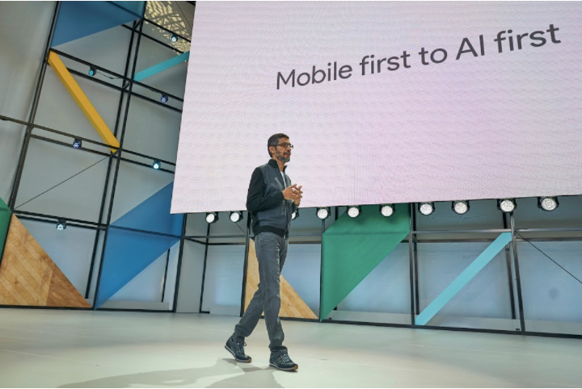

Google I/O - Inteligência Artificial
Publicado em:
@davidrobert
No geral o Google I/O 2017 foi bem denso em conteúdo. Ocorreram 155 sessões, 100 office hours, 85 code labs e 19 sandboxes!
Inteligência artificial foi um dos grandes temas da conferência. Atualmente, todos os produtos da Google estão utilizando alguma camada de inteligência artificial, e vão usar cada vez mais no futuro.
Mobile First to AI First

A empresa está lançando uma nova iniciativa chamada Google.ai para compartilhar documentos de pesquisa, ferramentas e diversos outros tópicos sobre inteligência artificial.
Um dos grandes lançamentos foi a segunda geração do Tensor Processing Units (TPU), um processador projetado especificamente para aprendizado de máquina, utilizado principalmente no produto TensorFlow. Com esse novo parque de equipamentos, a Google espera conseguir entregar 180 teraflops de performance.
A Google está efetivamente transformando sua plataforma de computação em nuvem para dar total suporte à Inteligência Artificial.
O Google Assistent teve melhorias significativas. O Google Assistent começou no celular Pixel e já está em mais de 100 milhões de dispositivos Android. A nova versão do assistente agora pode analisar o mundo à sua volta com a ajuda da câmera do smartphone. Usando tecnologia Google Lens, o assistente irá analisar o seu entorno e exibir conteúdo relevante na tela do dispositivo. Será possível ver a classificação de um restaurante ao direcionar a câmera do telefone para a loja, apontar para uma flor e identificar a espécie, ou até encontrar a música de uma banda ou vídeos apontando Lens para um cartaz de show. Um outro exemplo apresentado foi reconhecer as credenciais de login WiFi em uma imagem e o assistente usar essa informação para fazer login na rede.
Além disso, novos recursos estão tornando o assistente mais conversacional:
-
Outros idiomas estão sendo incorporados a plataforma (inclusive o Português);
-
Agora é possível digitar uma consulta em vez de dizê-la em voz alta;
-
O Google Assistent foi lançado também para a plataforma iOS (uma alternativa ao Siri);
-
Será possível usar o Google Assistent para enviar dinheiro para outras pessoas (inclusive dentro de um chat);
-
Integração com o Google Home e outros devices;
-
Disponibilização do Google Assistent SDK.
-
https://blog.google/products/assistant/your-assistant-getting-better-on-google-home-and-your-phone/
A versão 2 do Google Home foi apresentada. Os principais novos recursos são:
- Chamadas telefônicas gratuitas para os Estados Unidos e Canadá. Por padrão, o Google irá usar um número privado para esse recurso - mas você tem a opção de vinculá-lo ao seu próprio número de telefone celular (similar ao que já faz o Amazon Echo);
- Integração com HBO Now, Hulu, SoundCloud, Deezer e outros;
- Mais proativo (utilizando inteligência artificial) para sugerir algo;
- Respostas visuais na integração com smart TVs ou Chromecast. Exemplos: "OK Google, mostre o meu calendário para hoje" e o Google Home pode exibir instantaneamente os eventos do seu dia em uma TV conectada ao Chromecast. Peça ao Home para obter instruções sobre um local ou evento, e as direções serão enviadas diretamente para o aplicativo do Google Maps em seu telefone.
O Google Photos recebeu uma série de novos recursos, incluindo melhorias no compartilhamento de álbuns com pessoas que aparecem nas fotos, utilizando reconhecimento facial. No futuro, será permitido a remoção de itens indesejados das fotos como, por exemplo, um objeto que atrapalhe a imagem de alguma pessoa ao fundo. Também foi lançada uma feature para impressão de fotos.
O lançamento da versão beta do Android O ocorreu durante o evento. Foi revelado que a contagem de dispositivos ativos do Android ultrapassa 2 bilhões. A nova versão do Android tem como principais características o foco em segurança, otimizações (de consumo de bateria) e ferramentas para desenvolvimento (este foco foi denominado Vitals).
Mirando no próximo bilhão usuários on-line para a plataforma, está sendo desenvolvida a versão Android Go. Essa versão tem como objetivo conseguir funcionar em celulares com poucos recursos e deverá ser lançada em 2018.
Também ocorreram algumas outras novidades, como YouTube 360, nova versão do Google Tango e o lançamento do Google for jobs.
API.AI
Em 2016, a Google adquiriu a Api.ai, uma plataforma de conversação, que facilita a criação de bots, incluindo compreensão de linguagem natural em diversos idiomas e aprendizado de máquina. A plataforma evoluiu, e agora disponibiliza um SDK bem maduro para facilitar a integração.
- https://developers.google.com/actions/apiai/
- https://developers.google.com/actions/apiai/tutorials/getting-started
TensorFlow
Diversos produtos do Google utilizam TensorFlow, incluindo Search, Gmail, Translate, Maps, Android, Photos, Speech, YouTube, Play e muitos outros.
O foco no TensorFlow está bastante elevado:
- Ocorreram mais de 17500 commits desde Nov 2015;
- +475 contribuidores não-Google;
- +6400 repositorios com "TensorFlow" (no github);
- +5000 perguntas respondidas no Stack Overflow.
O suporte a novas linguagens de programação foi incorporado ao TensorFlow, incluindo agora Haskell, C++, Java, Python, Go, etc.
Durante o evento foi anunciado o TensorFlow Lite, uma versão do TensorFlow para mobile.
Cloud TPUs
Durante as sessões foi apresentado a Cloud de TPUs. Aparentemente bem poderosa, mas ainda na versão Alpha, a cloud pode se integrar com um conjunto de clusters heterogêneos, e diversas otimizações de performance para aplicações de machine learning já vem por padrão.